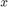
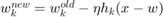
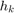
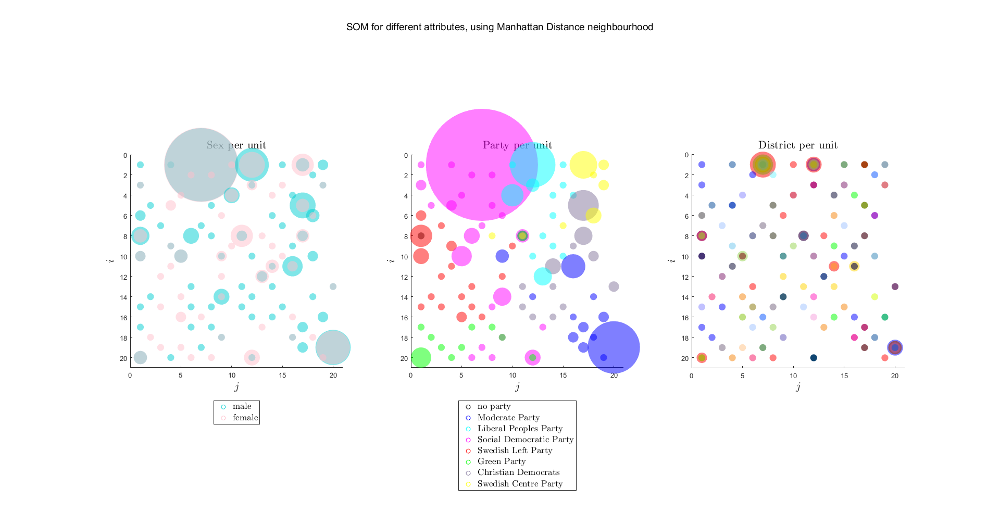

Data Clustering: Votes of MPs
Contents
set(0, 'DefaultFigurePosition', get(0,'screensize')); warning('off', 'MATLAB:mode:EmptyInput') clc; clear; close all; addpath('provided_code');
Introduction
In this exercise we will try to get some insights of the swedish parlia- ment ''political distribution'' by exploring data corresponding to the different MPs (such as their votes, their origins etc.).
In this regard, we will work with variables loaded from politics:
- parties = party membership of each MP
- sex = sex of each MP
- districts = district of each MP
- votes = list of 31 votes for each MP
- names = name of each MP
Plus some additional variables:
- sex_colormap = colormap for sex
- sex_labels = labels for sex
- party_colormap = colormap for party
- party_labels = labels for party
- districts_colormap = colormap for district
For instance, let us display some of these labels for the 10 first MPs.
politics; table(names(1:10), sex_labels(((sex(1:10) + 1)')), ... party_labels(((parties(1:10) + 1)')), districts(1:10), ... 'VariableNames', {'Name', 'Sex', 'Party', 'District'})
ans =
Name Sex Party District
___________________ ________ _____ ________
'Skarman Carl-Erik' 'male' 'm' 1
'Romanus Gabriel' 'male' 'fp' 1
'Odenberg Mikael' 'male' 'm' 1
'Jarrel Henrik S' 'male' 'm' 1
'Lindgren Sylvia' 'female' 's' 1
'Ask Beatrice' 'female' 'm' 1
'Hoffmann Ulla' 'female' 'v' 1
'Nordlander Inger' 'female' 's' 1
'Ruwaida Yvonne' 'female' 'mp' 1
'Konberg Bo' 'male' 'fp' 1
Setup and Topology
Setup
eta = 0.2; num_of_epochs = 1000; [num_of_MP, num_of_votes] = size(votes);
Topology
We will work with a 2D topology in which the units are connected in a grid-like fashion.
From an abstract point of view the units are organized in a 2D square grid, and their coordinates are given by a  pair. In practice, we will assign an index
pair. In practice, we will assign an index  to every unit so that
to every unit so that  , where
, where  in this example.
in this example.
side_of_topologic_grid = 20; num_of_units = side_of_topologic_grid^2; [x, y] = meshgrid(1:side_of_topologic_grid, 1:side_of_topologic_grid); is = reshape(x, 1, num_of_units); js = reshape(y, 1, num_of_units); weights = rand(num_of_units, num_of_votes);
Neighbourhood function
Self Organizing Maps differ from Competitive Leaning in that not only the winning unit is updated but also its neighbours. This might look alike the shared learning in Competitive Learning but differs in the way the neighbourhood is defined. We now work with a new space in the output layer where the units are arranged acording to a particular topology that we choose. As we highlighted before, usually simple topologies are chosen (in our example we use 2D grid).
In this regard, we need to define what the neighbourhood of a unit is.
Manhattan distance
A first attempt is to define the neighborhood of a unit by thresholding the manhattan distance between the unit and the rest of units to a certain value we call radius.This is actually the way that is proposed in the lab tutorial. We then update the winning unit and its neighbours' centers using the same function, i.e. $ w_k^{new} \gets w_k^{old} -\eta (x-w_k)$, where  is the input sample activating the wining unit and is the winning unit's and its neighbours unit's indices.
function [ k_neighbors ] = neighborhood2(k, radius, grid_side) %NEIGHBORHOOD2 Function to get the linearized index of the neighbours as a % column vector input the linearized index of the winner and the threshold. % % * k: unit to find neighbours of % * radius: radius of neighbourhood % * grid_size: size of the grid, in the lab example it is 10x10 % [x, y] = meshgrid(1:grid_side, 1:grid_side); is = reshape(x, 1, grid_side^2); js = reshape(y, 1, grid_side^2); i = is(k); j = js(k); dist = abs(x-i) + abs(y-j); k_neighbors = reshape(dist, grid_side^2, 1) <= radius; end
figure; % % *Example 1* % Let us consider a first example with the grid $10 \times 10$, where % the winner is, say, the $27:th$ unit and the neighbourhood is of radius % 2. % k_winner = 27; radius = 2; k_neighbors = neighborhood2(k_winner, radius, side_of_topologic_grid); subplot(1,2,1); hold on; plot(js, is, '.b', 'MarkerSize', 15); plot(js(k_neighbors), is(k_neighbors), '.m', 'MarkerSize', 30); plot(js(k_winner), is(k_winner), '.r', 'MarkerSize', 40); title(sprintf('Winner: (%d,%d) Radius: %d', ... is(k_winner), js(k_winner), radius), 'Interpreter', 'latex', ... 'FontSize', 16), axis ij; axis image; xlabel('$j$', 'Interpreter', 'latex', 'FontSize', 16); ylabel('$i$', 'Interpreter', 'latex', 'FontSize', 16); xlim([0, side_of_topologic_grid+1]); ylim([0, side_of_topologic_grid+1]); % % *Example 2* % In this example the winning unit is 67 and we consider a larger % neighbourhood, namely of radius 4. % k_winner = 67; radius = 4; k_neighbors = neighborhood2(k_winner, radius, side_of_topologic_grid); subplot(1,2,2); hold on; plot(js, is, '.b', 'MarkerSize', 15); plot(js(k_neighbors), is(k_neighbors), '.m', 'MarkerSize', 30); plot(js(k_winner), is(k_winner), '.r', 'MarkerSize', 40); title(sprintf('Winner: (%d,%d) Radius: %d', ... is(k_winner), js(k_winner), radius), 'Interpreter', 'latex', ... 'FontSize', 16), axis ij; axis image; xlim([0, side_of_topologic_grid+1]); xlabel('$j$', 'Interpreter', 'latex', 'FontSize', 16); ylabel('$i$', 'Interpreter', 'latex', 'FontSize', 16); ylim([0, side_of_topologic_grid+1]); suptitle('Example using Manhattan Distance neighbourhood');

Gaussian neighbourhood level
function [ k_neighbors ] = neighborhood2_gauss(k, sigma, grid_side) %NEIGHBORHOOD2 Function to get the linearized index of the neighbours as a % column vector input the linearized index of the winner and the threshold. % % * k: unit to find neighbours of % * sigma: std of the gaussian used to weight the unit's updates % E.g. if sigma = 1, then at distance 3 the weight is 0.011 % * grid_size: size of the grid, in the lab example it is 10x10 % [x, y] = meshgrid(1:grid_side, 1:grid_side); is = reshape(x, 1, grid_side^2); js = reshape(y, 1, grid_side^2); i = is(k); j = js(k); dist = abs(x-i) + abs(y-j); k_neighbors = reshape(exp(-.5*dist.^2/sigma^2), grid_side^2, 1); end
In the following, we propose to introduce a slight modification on the neighbourhood obtention. So far we have assigned the same update effect (unitary) to all updated units, both the winner and its neighbours. We now consider the usage of a gaussian distribution centered at the winner unit, which tells which units are more affected by the seen point. In particular, the update equation is now given by , where  denotes the neighborhood level if unit which decreases as the distance to the winning unit increases.
figure; % % *Example 1* % k_winner = 27; sigma = 1; k_neighbors = neighborhood2_gauss(k_winner, sigma, side_of_topologic_grid); subplot(1,2,1); b = bar3(reshape(k_neighbors,side_of_topologic_grid,side_of_topologic_grid)); for k = 1:length(b) zdata = b(k).ZData; b(k).CData = zdata; b(k).FaceColor = 'interp'; end title(sprintf('Winner: (%d,%d) Sigma: %.2f', ... is(k_winner), js(k_winner), sigma), 'Interpreter', 'latex', ... 'FontSize', 16), xlabel('$j$', 'Interpreter', 'latex', 'FontSize', 16); ylabel('$i$', 'Interpreter', 'latex', 'FontSize', 16); % % *Example 2* % k_winner = 27; sigma = 0.5; k_neighbors = neighborhood2_gauss(k_winner, sigma, side_of_topologic_grid); subplot(1,2,2); b = bar3(reshape(k_neighbors, side_of_topologic_grid, side_of_topologic_grid)); for k = 1:length(b) zdata = b(k).ZData; b(k).CData = zdata; b(k).FaceColor = 'interp'; end title(sprintf('Winner: (%d,%d) Sigma: %.2f', ... is(k_winner), js(k_winner), sigma), 'Interpreter', 'latex', ... 'FontSize', 16), xlabel('$j$', 'Interpreter', 'latex', 'FontSize', 16); ylabel('$i$', 'Interpreter', 'latex', 'FontSize', 16); colorbar suptitle('Example using Neighbourhood level');

Training - Manhattan Distance
As usual, we diminish the size of the neighborhood as we go through the training epochs. Also we shuffle the MPs at every epoch before presenting them sequentially to the network;
for epoch = 1:num_of_epochs if epoch < .1 * num_of_epochs radius = 4; sigma = 2; elseif epoch < .2 * num_of_epochs radius = 3; sigma = 1.6; elseif epoch < .5 * num_of_epochs radius = 2; sigma = 1.2; elseif epoch < .8 * num_of_epochs radius = 1; sigma = 0.8; else radius = 0; sigma = 0.00001; end for mp_idx = randperm(num_of_MP) % Find winning unit mp = votes(mp_idx, :); diff = repmat(mp, num_of_units, 1) - weights; dist = sum(diff.^2, 2); [~, k_winner] = min(dist); % Update function (is a col. vector) and update mask (just repeat % it for num_of_votes columns) update_function = repmat( ... neighborhood2(k_winner, radius, side_of_topologic_grid), ... 1, num_of_votes); %update_function = repmat( ... % neighborhood2_gauss(k_winner, sigma, side_of_topologic_grid), ... % 1, num_of_votes); % Update weights weights = weights + update_function .* (eta * diff); end end
Visualizing - Manhattan Distance
Explanation for the unit distribution
- For every MP, find the closest unit. In short, cluster the MPs using the grid of units.
- Then assign to every unit a set of colors depending on the attribute distribution within the corresponding cluster.
- Plot the units in the topological space with their color for each attribute.
clustering = zeros(num_of_MP, 1); sex_freq = cell(num_of_units, 1); party_freq = cell(num_of_units, 1); districts_freq = cell(num_of_units, 1); for mp_idx = 1:num_of_MP % Obtain the closest unit to mp mp = votes(mp_idx, :); diff = repmat(mp, num_of_units, 1) - weights; dist = sum(diff.^2, 2); [~, k_winning_unit] = min(dist); % Assign mp attributes to the found unit clustering(mp_idx) = k_winning_unit; sex_freq{k_winning_unit} = [sex_freq{k_winning_unit}, sex(mp_idx)]; party_freq{k_winning_unit} = [party_freq{k_winning_unit}, parties(mp_idx)]; districts_freq{k_winning_unit} = [districts_freq{k_winning_unit}, districts(mp_idx)]; end % Plot grid of units figure; for k = 1:num_of_units % Plot sex attributes subplot(1,3,1); hold on; if(~isempty(sex_freq{k})) for l = unique(sort(sex_freq{k}), 'stable') marker_size = nnz(sex_freq{k}==l)^1.2*100; scatter(js(k), is(k), marker_size, 'filled', ... 'MarkerFaceColor', sex_colormap(l+1,:), ... 'MarkerFaceAlpha',4/8); end end % Plot party attributes subplot(1,3,2); hold on; if(~isempty(party_freq{k})) for l = unique(sort(party_freq{k}), 'stable') marker_size = (nnz(party_freq{k}==l))^1.2*100; scatter(js(k), is(k), marker_size, 'filled', ... 'MarkerFaceColor', party_colormap(l+1,:), ... 'MarkerFaceAlpha',4/8); end end % Plot district attributes subplot(1,3,3); hold on; if(~isempty(districts_freq{k})) for l = unique(sort(districts_freq{k}), 'stable') marker_size = nnz(districts_freq{k}==l)^1.2*100; scatter(js(k), is(k), marker_size, 'filled', ... 'MarkerFaceColor', districts_colormap(l,:), ... 'MarkerFaceAlpha',4/8); end end end subplot(1,3,1); title('Sex per unit', 'Interpreter', 'latex', 'FontSize', 16); axis ij; axis image; xlabel('$j$', 'Interpreter', 'latex', 'FontSize', 16); ylabel('$i$', 'Interpreter', 'latex', 'FontSize', 16); xlim([0, side_of_topologic_grid+1]); ylim([0, side_of_topologic_grid+1]); h = zeros(length(sex_labels), 1); for i = 1:length(sex_labels) h(i) = plot(NaN, NaN, 'o','color', sex_colormap(i, :)); hold on; end legend(h, sex_labels,'Location', 'southoutside', 'Interpreter', ... 'latex', 'FontSize', 13); subplot(1,3,2); title('Party per unit', 'Interpreter', 'latex', 'FontSize', 16); axis ij; axis image; xlabel('$j$', 'Interpreter', 'latex', 'FontSize', 16); ylabel('$i$', 'Interpreter', 'latex', 'FontSize', 16); xlim([0, side_of_topologic_grid+1]); ylim([0, side_of_topologic_grid+1]); h = zeros(length(party_names), 1); for i = 1:length(party_names) h(i) = plot(NaN, NaN, 'o','color', party_colormap(i, :)); hold on; end legend(h, party_names,'Location', 'southoutside', 'Interpreter', ... 'latex', 'FontSize', 13); subplot(1,3,3); title('District per unit', 'Interpreter', 'latex', 'FontSize', 16); axis ij; axis image; xlabel('$j$', 'Interpreter', 'latex', 'FontSize', 16); ylabel('$i$', 'Interpreter', 'latex', 'FontSize', 16); xlim([0, side_of_topologic_grid+1]); ylim([0, side_of_topologic_grid+1]); suptitle('SOM for different attributes, using Manhattan Distance neighbourhood');
- Tables of clusters *
Association of every MP to one unit
[~, order] = sort(clustering); t_manhattan = table(names(order), sex_labels(((sex(order) + 1)')), ... party_labels(((parties(order) + 1)')), ... districts(order), ... clustering(order), ... 'VariableNames',{'Name','Sex','Party','District','Cluster'})
t_manhattan =
Name Sex Party District Cluster
__________________________________ ________ __________ ________ _______
'Vestlund Borje' 'male' 's' 1 1
'Abramsson Karl Gustav' 'male' 's' 28 4
'Lindgren Sylvia' 'female' 's' 1 7
'Agenberg Tomas' 'male' 's' 1 7
'Nordquist Kaj' 'male' 's' 1 7
'Hassan Maria' 'female' 's' 1 7
'Frans Joe' 'male' 's' 1 7
'Palm Veronica' 'female' 's' 1 7
'Lejon Britta' 'female' 's' 2 7
'Rask Ola' 'male' 's' 2 7
'Lindberg Niclas' 'male' 's' 2 7
'Arvidsson Eva' 'female' 's' 2 7
'Osman Sherifay Mariam' 'female' 's' 2 7
'Axelsson Christina' 'female' 's' 2 7
'Beiming Cinnika' 'female' 's' 2 7
'Kerimo Yilmaz' 'male' 's' 2 7
'Damberg Mikael' 'male' 's' 2 7
'Tingsgard Tone' 'female' 's' 3 7
'Tesfazion Rezene' 'male' 's' 3 7
'Berglind Mats' 'male' 's' 3 7
'Gille Agneta' 'female' 's' 3 7
'Hagberg Michael' 'male' 's' 4 7
'Bjurling Laila' 'female' 's' 4 7
'Olovsson Fredrik' 'male' 's' 4 7
'Karlsson Sonia' 'female' 's' 5 7
'ohman Conny' 'male' 's' 5 7
'Skoldestig Berndt' 'male' 's' 5 7
'Ludvigsson Anne' 'female' 's' 5 7
'Gustafsson Billy' 'male' 's' 5 7
'Malmstrom Louise' 'female' 's' 5 7
'Nilsson Martin' 'male' 's' 6 7
'Sandgren Margareta' 'female' 's' 6 7
'Hagg Carina' 'female' 's' 6 7
'Petersson Helene' 'female' 's' 6 7
'Wegendal Lars' 'male' 's' 7 7
'Juholt Hakan' 'male' 's' 8 7
'Virgin Lilian' 'female' 's' 9 7
'Gronhagen Carina' 'female' 's' 9 7
'Skoog Christer' 'male' 's' 10 7
'Bjorkman Jan' 'male' 's' 10 7
'Andersson Kerstin' 'female' 's' 10 7
'Larsson Hillevi' 'female' 's' 11 7
'Granlund Marie' 'female' 's' 11 7
'Lindkvist Britt-Marie' 'female' 's' 11 7
'Jakobsson Leif' 'male' 's' 11 7
'Karlsson Anders' 'male' 's' 12 7
'Harstedt Kent' 'male' 's' 12 7
'Hagberg Christin' 'female' 's' 12 7
'Bernhardsson Bo' 'male' 's' 13 7
'Jarl Beck Inger' 'female' 's' 13 7
'Wester Ulla' 'female' 's' 14 7
'Bengtsson Anders' 'male' 's' 14 7
'Engle Kerstin' 'female' 's' 14 7
'Adelsbo Christer' 'male' 's' 14 7
'Eriksson Alf' 'male' 's' 15 7
'Westerlund Panke Majl?ne' 'female' 's' 15 7
'Sahlberg Par Axel' 'male' 's' 15 7
'Hoff Hans' 'male' 's' 15 7
'Carlstrom Marianne' 'female' 's' 16 7
'Brandin Claes-Goran' 'male' 's' 16 7
'Wittgren-Ahl Siw' 'female' 's' 16 7
'Lind?n Rolf' 'male' 's' 16 7
'Johansson Lars' 'male' 's' 16 7
'Carlsson i Hisings Backa Gunilla' 'female' 's' 16 7
'Nilsson Lennart' 'male' 's' 17 7
'Larsson Jan-Olof' 'male' 's' 17 7
'Brakenhielm Catharina' 'female' 's' 17 7
'Forslund Kenneth G' 'male' 's' 17 7
'Bohlin Olsson Britt' 'female' 's' 18 7
'Soderqvist Nils-Erik' 'male' 's' 18 7
'Nenes Christina' 'female' 's' 18 7
'Jonsson Peter' 'male' 's' 18 7
'Nordstrom Kjell' 'male' 's' 20 7
'Green Monica' 'female' 's' 20 7
'Ahlin Urban' 'male' 's' 20 7
'Ohlsson Carina' 'female' 's' 20 7
'Lander Jarl' 'male' 's' 21 7
'Johansson Ann-Kristine' 'female' 's' 21 7
'Pettersson Marina' 'female' 's' 21 7
'Ternemar Tommy' 'male' 's' 21 7
'Lundberg Inger' 'female' 's' 22 7
'Holmqvist Nils-Goran' 'male' 's' 22 7
'Axelsson Lennart' 'male' 's' 22 7
'Ernkrans Matilda' 'female' 's' 22 7
'Magnusson Goran' 'male' 's' 23 7
'Nilsson Pia' 'female' 's' 23 7
'Vallius Paavo' 'male' 's' 23 7
'Kvarnstrom Kurt' 'male' 's' 24 7
'Sarnblad Anneli' 'female' 's' 24 7
'Bohlin Sinikka' 'female' 's' 25 7
'Svensson Per-Olof' 'male' 's' 25 7
'Lindestam asa' 'female' 's' 25 7
'Stenberg Hans' 'male' 's' 26 7
'Lundberg Agneta' 'female' 's' 26 7
'Eberstein Susanne' 'female' 's' 26 7
'Norlander Goran' 'male' 's' 26 7
'Sandberg Gunnar' 'male' 's' 27 7
'Berglund Rune' 'male' 's' 27 7
'Lundberg Carin' 'female' 's' 28 7
'Klockare Lennart' 'male' 's' 29 7
'Zakrisson Kristina' 'female' 's' 29 7
'Ahlqvist Birgitta' 'female' 's' 29 7
'astrom Karin' 'female' 's' 29 7
'Gidblom Birgitta' 'female' 's' 29 7
'oberg Maria' 'female' 's' 29 7
'Franz?n Mia' 'female' 'fp' 2 10
'Romanus Gabriel' 'male' 'fp' 1 12
'Konberg Bo' 'male' 'fp' 1 12
'Narti Ana Maria' 'female' 'fp' 1 12
'Hamilton Carl B' 'male' 'fp' 2 12
'Andr?n Gunnar' 'male' 'fp' 2 12
'Lundstrom Nina' 'female' 'fp' 2 12
'Andreasson Martin' 'male' 'fp' 2 12
'Darell Linn?a' 'female' 'fp' 5 12
'Krantz Tobias' 'male' 'fp' 6 12
'Thor?n Sverker' 'male' 'fp' 8 12
'Berg Heli' 'female' 'fp' 10 12
'Widman Allan' 'male' 'fp' 11 12
'Nilsson Ulf' 'male' 'fp' 13 12
'Wahlgren Marie' 'female' 'fp' 13 12
'Nylander Christer' 'male' 'fp' 14 12
'Kollmats Lennart' 'male' 'fp' 15 12
'Wigstrom Cecilia' 'female' 'fp' 16 12
'Winback Christer' 'male' 'fp' 20 12
'Pehrson Johan' 'male' 'fp' 22 12
'Heinemann Kerstin' 'female' 'fp' 23 12
'Backman Hans' 'male' 'fp' 25 12
'Hellquist Solveig' 'female' 'fp' 26 12
'Gronlund Krantz Anna' 'female' 'fp' 29 12
'Nordmark Gunnar' 'male' 'fp' 7 15
'Stenmark Rigmor' 'female' 'c' 3 17
'Tiefensee Roger' 'male' 'c' 4 17
'Danielsson Staffan' 'male' 'c' 5 17
'Andersson Margareta' 'female' 'c' 6 17
'Ericson Lars-Ivar' 'male' 'c' 14 17
'Qarlsson Annika' 'female' 'c' 18 17
'Carlsson Birgitta' 'female' 'c' 20 17
'Gerdin Viviann' 'female' 'c' 21 17
'Larsen Sofia' 'female' 'c' 22 17
'Sell?n Birgitta' 'female' 'c' 26 17
'Johansson Jorgen' 'male' 'c' 23 19
'Bergstrom Sven' 'male' 'c' 25 19
'Nordlander Inger' 'female' 's' 1 26
'Israelsson Margareta' 'female' 's' 23 28
'Larsson Hakan' 'male' 'c' 27 38
'Papadopoulos Nikos' 'male' 's' 1 41
'Ringman Agneta' 'female' 's' 8 41
'Granbom Karin' 'female' 'fp' 5 52
'Strandberg Torkild' 'male' 'fp' 12 52
'Aronson Marita' 'female' 'fp' 17 52
'Flyborg Eva' 'female' 'fp' 16 55
'Linander Johan' 'male' 'c' 13 59
'Torstensson asa' 'female' 'c' 17 59
'Fagerstrom Ann-Marie' 'female' 's' 8 65
'Rojas Mauricio' 'male' 'fp' 1 70
'Pilsater Karin' 'female' 'fp' 2 70
'Acketoft Tina' 'female' 'fp' 12 70
'Ertsborn Jan' 'male' 'fp' 15 70
'Bager Erling' 'male' 'fp' 16 70
'Tysklind Lars' 'male' 'fp' 17 70
'Brod?n Anita' 'female' 'fp' 18 70
'Hagberg Liselott' 'female' 'fp' 4 74
'Ullenhag Erik' 'male' 'fp' 3 76
'Wibe Soren' 'male' 's' 28 82
'Markstrom Elisebeht' 'female' 's' 4 84
'Nord?n Marie' 'female' 's' 27 84
'Ekholm Berndt' 'male' 's' 19 88
'Hoij Helena' 'female' 'kd' 1 97
'Svensson Ingvar' 'male' 'kd' 2 97
'Brus Sven' 'male' 'kd' 5 97
'Sandahl Olle' 'male' 'kd' 7 97
'Gylling Johnny' 'male' 'kd' 10 97
'Lantz Kenneth' 'male' 'kd' 12 97
'Althin Peter' 'male' 'kd' 13 97
'Enochson Annelie' 'female' 'kd' 16 97
'Gustafsson Holger' 'male' 'kd' 20 97
'Lind?n Lars' 'male' 'kd' 26 97
'Tjernberg Gunilla' 'female' 'kd' 28 97
'Walivaara Erling' 'male' 'kd' 29 97
'Rosengren Per' 'male' 'v' 20 101
'Hellberg Owe' 'male' 'v' 25 101
'Moberg Carina' 'female' 's' 2 109
'Patriksson Runar' 'male' 'fp' 21 114
'Lundgren Kerstin' 'female' 'c' 2 118
'Erlandsson Eskil' 'male' 'c' 7 118
'Hansson Agne' 'male' 'c' 8 118
'Andersson Jan' 'male' 'c' 15 118
'Wiklund Anders' 'male' 'v' 24 123
'Parssinen Raimo' 'male' 's' 25 127
'Johansson Kenneth' 'male' 'c' 24 135
'Ohly Lars' 'male' 'v' 1 141
'Larsson Kalle' 'male' 'v' 1 141
'Schyman Gudrun' 'female' 'no party' 2 141
'oz?rk?t Sermin' 'female' 'v' 2 141
'Lundstrom Sten' 'male' 'v' 11 141
'Karlsson Kjell-Erik' 'male' 'v' 15 141
'Olsson Rolf' 'male' 'v' 16 141
'Holma Siv' 'female' 'v' 29 141
'Furustrand Reynoldh' 'male' 's' 4 146
'Persson i Simrishamn Goran' 'male' 's' 14 146
'Kjornsberg Arne' 'male' 's' 19 146
'Granstrom Per Erik' 'male' 's' 24 146
'Vasterteg Claes' 'male' 'c' 19 148
'Reinfeldt Fredrik' 'male' 'm' 2 151
'Bjorling Ewa' 'female' 'm' 2 151
'Persson Catherine' 'female' 's' 13 151
'Jonsson Mona' 'female' 'mp' 17 151
'Vanerlov Ingemar' 'male' 'kd' 18 151
'Fransson Sonja' 'female' 's' 19 151
'Hietala Nordlund Barbro' 'female' 's' 24 151
'Saarinen Ingegerd' 'female' 'mp' 28 151
'Olofsson Maud' 'female' 'c' 28 151
'Bargholtz Helena' 'female' 'fp' 2 153
'Attefall Stefan' 'male' 'kd' 1 157
'Palsson Chatrine' 'female' 'kd' 8 157
'Runegrund Rosita' 'female' 'kd' 17 157
'Persson Sven Gunnar' 'male' 'kd' 22 157
'Marcelind Ragnwi' 'female' 'kd' 25 157
'Sjostrand Sven-Erik' 'male' 'v' 14 164
'Thorborg Karin' 'female' 'v' 23 164
'Svensson Smith Karin' 'female' 'v' 13 170
'Wikstrom Cecilia' 'female' 'fp' 3 174
'von der Esch Bjorn' 'male' 'kd' 4 176
'Danestig Britt-Marie' 'female' 'v' 5 181
'Stafilidis Tasso' 'male' 'v' 12 181
'Wahl?n Gunilla' 'female' 'v' 26 181
'Gustavsson Lennart' 'male' 'v' 28 181
'Waidelich Tommy' 'male' 's' 2 185
'Wahlstrom Gote' 'male' 's' 6 185
'Jonsson Anita' 'female' 's' 13 185
'Olander Ronny' 'male' 's' 13 185
'Ytterberg Mariann' 'female' 's' 23 185
'Kristiansson Karlstedt Kerstin' 'female' 's' 26 185
'Carlsson i Tyreso Gunilla' 'female' 'm' 1 189
'Engstrom Hillevi' 'female' 'm' 2 189
'Johnsson Jeppe' 'male' 'm' 10 189
'Darvik Axel' 'male' 'fp' 16 192
'Sabuni Nyamko' 'female' 'fp' 1 195
'Landgren Per' 'male' 'kd' 16 198
'Lindstrom Torsten' 'male' 'kd' 23 198
'Linna Elina' 'female' 'v' 4 204
'Odell Mats' 'male' 'kd' 2 214
'Davidson Inger' 'female' 'kd' 2 214
'Andersson Yvonne' 'female' 'kd' 5 214
'Larsson Maria' 'female' 'kd' 6 214
'de Pourbaix-Lundin Marietta' 'female' 'm' 2 216
'Hagfeldt Stefan' 'male' 'm' 5 216
'Andersson Magdalena' 'female' 'm' 6 216
'Johansson Bengt-Anders' 'male' 'm' 6 216
'Billstrom Tobias' 'male' 'm' 11 216
'Danielsson Peter' 'male' 'm' 12 216
'Tolgfors Sten' 'male' 'm' 22 216
'Norinder Patrik' 'male' 'm' 25 216
'J?hannesson Berit' 'female' 'v' 16 223
'astrom Alice' 'female' 'v' 6 229
'Ohlsson Birgitta' 'female' 'fp' 1 233
'Leijonborg Lars' 'male' 'fp' 2 233
'Ekstrom Anne-Marie' 'female' 'fp' 19 233
'Fremling Lennart' 'male' 'fp' 24 233
'angstrom Yvonne' 'female' 'fp' 28 233
'Einarsson Mats' 'male' 'v' 2 246
'Hagglund Goran' 'male' 'kd' 6 251
'Svensson Alf' 'male' 'kd' 6 254
'Gustafsson Lars' 'male' 'kd' 15 260
'Lindgren Else-Marie' 'female' 'kd' 19 260
'Backstrom Lars' 'male' 'v' 17 262
'Engstrom Marie' 'female' 'v' 21 265
'Lofstrand Johan' 'male' 's' 5 269
'ornfjader Krister' 'male' 's' 8 269
'Astudillo Luciano' 'male' 's' 11 269
'Frisk Helena' 'female' 's' 22 269
'Lilja Lars' 'male' 's' 28 269
'Ax?n Gunnar' 'male' 'm' 5 272
'Hammarbergh Krister' 'male' 'm' 29 278
'Beijer Lennart' 'male' 'v' 8 281
'Hoffmann Ulla' 'female' 'v' 1 283
'Pedersen Peter' 'male' 'v' 22 286
'Hogstrom Kenth' 'male' 's' 25 288
'Lindgren Ulrik' 'male' 'kd' 24 291
'Kihlstrom Dan' 'male' 'kd' 21 295
'Burman Ingrid' 'female' 'v' 3 305
'Dinamarca Rossana' 'female' 'v' 18 305
'Skold Jansson Camilla' 'female' 'v' 27 307
'Skanberg Tuve' 'male' 'kd' 14 312
'Oscarsson Mikael' 'male' 'kd' 3 314
'Ask Beatrice' 'female' 'm' 1 316
'Hedquist Lennart' 'male' 'm' 3 319
'Roslund Carl-Axel' 'male' 'm' 11 319
'Fridolin Gustav' 'male' 'mp' 1 321
'Lindholm Jan' 'male' 'mp' 24 326
'Holm Ulf' 'male' 'mp' 13 328
'Hogman Berit' 'female' 's' 21 333
'Odenberg Mikael' 'male' 'm' 1 337
'Westman Henrik' 'male' 'm' 2 337
'Ruwaida Yvonne' 'female' 'mp' 1 342
'Roxbergh Claes' 'male' 'mp' 16 349
'Ulvskog Marita' 'female' 's' 24 349
'von Sydow Henrik' 'male' 'm' 15 356
'Ren? Inger' 'female' 'm' 17 356
'Lofgren Ulla' 'female' 'm' 28 358
'Hedstrom Lotta' 'female' 'mp' 25 363
'Feltzing Barbro' 'female' 'mp' 18 365
'Eneroth Tomas' 'male' 's' 7 367
'Olsson Kent' 'male' 'm' 17 377
'Sjosten Ulf' 'male' 'm' 19 377
'Skarman Carl-Erik' 'male' 'm' 1 380
'Jarrel Henrik S' 'male' 'm' 1 380
'Lilliehook Anna' 'female' 'm' 1 380
'Adelsohn Liljeroth Lena' 'female' 'm' 1 380
'Lennmarker Goran' 'male' 'm' 2 380
'Hamilton Bjorn' 'male' 'm' 2 380
'Enstrom Karin' 'female' 'm' 2 380
'Bill Per' 'male' 'm' 3 380
'Westerberg Per' 'male' 'm' 4 380
'Lindgren Anna' 'female' 'm' 5 380
'Hogmark Anders G' 'male' 'm' 7 380
'Aurelius Nils Fredrik' 'male' 'm' 8 380
'Husmark Pehrsson Cristina' 'female' 'm' 12 380
'Lindblad Lars' 'male' 'm' 13 380
'Thal?n Finn? Ewa' 'female' 'm' 13 380
'Palsson Anne-Marie' 'female' 'm' 13 380
'Ekendahl Maud' 'female' 'm' 14 380
'Palsson Margareta' 'female' 'm' 14 380
'Brod?n Anne Marie' 'female' 'm' 15 380
'Lindblad Goran' 'male' 'm' 16 380
'Sid?n Anita' 'female' 'm' 16 380
'Magnusson Cecilia' 'female' 'm' 16 380
'Nystrom Elizabeth' 'female' 'm' 18 380
'Widegren Cecilia' 'female' 'm' 20 380
'Radhstrom Jan-Evert' 'male' 'm' 21 380
'Hogstrom Tomas' 'male' 'm' 23 380
'Gunnarsson Rolf' 'male' 'm' 24 380
'Kjellberg Bertil' 'male' 'm' 26 380
'Sundell Ola' 'male' 'm' 27 380
'angstrom Lars' 'male' 'mp' 2 381
'Valtersson Mikaela' 'female' 'mp' 2 381
'Ericson Gunvor G' 'female' 'mp' 4 381
'Hillar Rosenqvist Helena' 'female' 'mp' 5 381
'Johansson Mikael' 'male' 'mp' 22 381
'Eriksson Peter' 'male' 'mp' 29 381
'Bjornlod Leif' 'male' 'mp' 21 384
'Berglund Nilsson Mona' 'female' 's' 17 386
'Johansson Anita' 'female' 's' 2 388
'Johansson Jan Emanuel' 'male' 's' 2 392
'Domeij asa' 'female' 'mp' 3 392
'Adolfsson Elgestam Carina' 'female' 's' 7 392
'Nilsson Annika' 'female' 's' 12 392
'Radstrom Britta' 'female' 's' 28 392
'Elmsater-Svard Catharina' 'female' 'm' 2 399
Clusters with 4 ore more MPs
for cl = unique(clustering)' if (sum(clustering(order) == cl) > 3) t_manhattan(clustering(order) == cl, 1:5); end end
Training - Gaussian Neighbourhood Level
As usual, we diminish the size of the neighborhood as we go through the training epochs. Also we shuffle the MPs at every epoch before presenting them sequentially to the network;
for epoch = 1:num_of_epochs if epoch < .1 * num_of_epochs radius = 4; sigma = 2; elseif epoch < .2 * num_of_epochs radius = 3; sigma = 1.6; elseif epoch < .5 * num_of_epochs radius = 2; sigma = 1.2; elseif epoch < .8 * num_of_epochs radius = 1; sigma = 0.8; else radius = 0; sigma = 0.00001; end for mp_idx = randperm(num_of_MP) % Find winning unit mp = votes(mp_idx, :); diff = repmat(mp, num_of_units, 1) - weights; dist = sum(diff.^2, 2); [~, k_winner] = min(dist); % Update function (is a col. vector) and update mask (just repeat % it for num_of_votes columns) update_function = repmat( ... neighborhood2(k_winner, radius, side_of_topologic_grid), ... 1, num_of_votes); %update_function = repmat( ... % neighborhood2_gauss(k_winner, sigma, side_of_topologic_grid), ... % 1, num_of_votes); % Update weights weights = weights + update_function .* (eta * diff); end end
Visualizing - Gaussian Neighbourhood Level
Explanation for the unit distribution
- For every MP, find the closest unit. In short, cluster the MPs using the grid of units.
- Then assign to every unit a set of colors depending on the attribute distribution within the corresponding cluster.
- Plot the units in the topological space with their color for each attribute.
clustering = zeros(num_of_MP, 1); sex_freq = cell(num_of_units, 1); party_freq = cell(num_of_units, 1); districts_freq = cell(num_of_units, 1); for mp_idx = 1:num_of_MP % Obtain the closest unit to mp mp = votes(mp_idx, :); diff = repmat(mp, num_of_units, 1) - weights; dist = sum(diff.^2, 2); [~, k_winning_unit] = min(dist); % Assign mp attributes to the found unit clustering(mp_idx) = k_winning_unit; sex_freq{k_winning_unit} = [sex_freq{k_winning_unit}, sex(mp_idx)]; party_freq{k_winning_unit} = [party_freq{k_winning_unit}, parties(mp_idx)]; districts_freq{k_winning_unit} = [districts_freq{k_winning_unit}, districts(mp_idx)]; end % Plot grid of units figure; for k = 1:num_of_units % Plot sex attributes subplot(1,3,1); hold on; if(~isempty(sex_freq{k})) for l = unique(sort(sex_freq{k}), 'stable') marker_size = nnz(sex_freq{k}==l)^1.2*100; scatter(js(k), is(k), marker_size, 'filled', ... 'MarkerFaceColor', sex_colormap(l+1,:), ... 'MarkerFaceAlpha',4/8); end end % Plot party attributes subplot(1,3,2); hold on; if(~isempty(party_freq{k})) for l = unique(sort(party_freq{k}), 'stable') marker_size = (nnz(party_freq{k}==l))^1.2*100; scatter(js(k), is(k), marker_size, 'filled', ... 'MarkerFaceColor', party_colormap(l+1,:), ... 'MarkerFaceAlpha',4/8); end end % Plot district attributes subplot(1,3,3); hold on; if(~isempty(districts_freq{k})) for l = unique(sort(districts_freq{k}), 'stable') marker_size = nnz(districts_freq{k}==l)^1.2*100; scatter(js(k), is(k), marker_size, 'filled', ... 'MarkerFaceColor', districts_colormap(l,:), ... 'MarkerFaceAlpha',4/8); end end end subplot(1,3,1); title('Sex per unit', 'Interpreter', 'latex', 'FontSize', 16); axis ij; axis image; xlabel('$j$', 'Interpreter', 'latex', 'FontSize', 16); ylabel('$i$', 'Interpreter', 'latex', 'FontSize', 16); xlim([0, side_of_topologic_grid+1]); ylim([0, side_of_topologic_grid+1]); h = zeros(length(sex_labels), 1); for i = 1:length(sex_labels) h(i) = plot(NaN, NaN, 'o','color', sex_colormap(i, :)); hold on; end legend(h, sex_labels,'Location', 'southoutside', 'Interpreter', ... 'latex', 'FontSize', 13); subplot(1,3,2); title('Party per unit', 'Interpreter', 'latex', 'FontSize', 16); axis ij; axis image; xlabel('$j$', 'Interpreter', 'latex', 'FontSize', 16); ylabel('$i$', 'Interpreter', 'latex', 'FontSize', 16); xlim([0, side_of_topologic_grid+1]); ylim([0, side_of_topologic_grid+1]); h = zeros(length(party_names), 1); for i = 1:length(party_names) h(i) = plot(NaN, NaN, 'o','color', party_colormap(i, :)); hold on; end legend(h, party_names,'Location', 'southoutside', 'Interpreter', ... 'latex', 'FontSize', 13); subplot(1,3,3); title('District per unit', 'Interpreter', 'latex', 'FontSize', 16); axis ij; axis image; xlabel('$j$', 'Interpreter', 'latex', 'FontSize', 16); ylabel('$i$', 'Interpreter', 'latex', 'FontSize', 16); xlim([0, side_of_topologic_grid+1]); ylim([0, side_of_topologic_grid+1]); suptitle('SOM for different attributes, using Gaussian Neighbourhood Level');

- Tables of clusters *
Association of every MP to one unit
[~, order] = sort(clustering); t_manhattan = table(names(order), sex_labels(((sex(order) + 1)')), ... party_labels(((parties(order) + 1)')), ... districts(order), ... clustering(order), ... 'VariableNames',{'Name','Sex','Party','District','Cluster'})
t_manhattan =
Name Sex Party District Cluster
__________________________________ ________ __________ ________ _______
'Burman Ingrid' 'female' 'v' 3 1
'Dinamarca Rossana' 'female' 'v' 18 1
'Granbom Karin' 'female' 'fp' 5 3
'Strandberg Torkild' 'male' 'fp' 12 3
'Aronson Marita' 'female' 'fp' 17 3
'Ohlsson Birgitta' 'female' 'fp' 1 5
'Leijonborg Lars' 'male' 'fp' 2 5
'Ekstrom Anne-Marie' 'female' 'fp' 19 5
'Fremling Lennart' 'male' 'fp' 24 5
'angstrom Yvonne' 'female' 'fp' 28 5
'Flyborg Eva' 'female' 'fp' 16 8
'Romanus Gabriel' 'male' 'fp' 1 10
'Konberg Bo' 'male' 'fp' 1 10
'Narti Ana Maria' 'female' 'fp' 1 10
'Hamilton Carl B' 'male' 'fp' 2 10
'Andr?n Gunnar' 'male' 'fp' 2 10
'Lundstrom Nina' 'female' 'fp' 2 10
'Andreasson Martin' 'male' 'fp' 2 10
'Darell Linn?a' 'female' 'fp' 5 10
'Krantz Tobias' 'male' 'fp' 6 10
'Thor?n Sverker' 'male' 'fp' 8 10
'Berg Heli' 'female' 'fp' 10 10
'Widman Allan' 'male' 'fp' 11 10
'Nilsson Ulf' 'male' 'fp' 13 10
'Wahlgren Marie' 'female' 'fp' 13 10
'Nylander Christer' 'male' 'fp' 14 10
'Kollmats Lennart' 'male' 'fp' 15 10
'Wigstrom Cecilia' 'female' 'fp' 16 10
'Winback Christer' 'male' 'fp' 20 10
'Pehrson Johan' 'male' 'fp' 22 10
'Heinemann Kerstin' 'female' 'fp' 23 10
'Backman Hans' 'male' 'fp' 25 10
'Hellquist Solveig' 'female' 'fp' 26 10
'Gronlund Krantz Anna' 'female' 'fp' 29 10
'Stenmark Rigmor' 'female' 'c' 3 12
'Tiefensee Roger' 'male' 'c' 4 12
'Danielsson Staffan' 'male' 'c' 5 12
'Andersson Margareta' 'female' 'c' 6 12
'Ericson Lars-Ivar' 'male' 'c' 14 12
'Qarlsson Annika' 'female' 'c' 18 12
'Carlsson Birgitta' 'female' 'c' 20 12
'Gerdin Viviann' 'female' 'c' 21 12
'Larsen Sofia' 'female' 'c' 22 12
'Sell?n Birgitta' 'female' 'c' 26 12
'Lundgren Kerstin' 'female' 'c' 2 14
'Erlandsson Eskil' 'male' 'c' 7 14
'Hansson Agne' 'male' 'c' 8 14
'Andersson Jan' 'male' 'c' 15 14
'Linander Johan' 'male' 'c' 13 18
'Torstensson asa' 'female' 'c' 17 18
'Gustafsson Lars' 'male' 'kd' 15 20
'Lindgren Else-Marie' 'female' 'kd' 19 20
'Bargholtz Helena' 'female' 'fp' 2 22
'Ullenhag Erik' 'male' 'fp' 3 29
'Johansson Kenneth' 'male' 'c' 24 37
'Hoffmann Ulla' 'female' 'v' 1 41
'Wikstrom Cecilia' 'female' 'fp' 3 44
'Hagberg Liselott' 'female' 'fp' 4 50
'Nordmark Gunnar' 'male' 'fp' 7 52
'Larsson Hakan' 'male' 'c' 27 55
'Hoij Helena' 'female' 'kd' 1 58
'Svensson Ingvar' 'male' 'kd' 2 58
'Brus Sven' 'male' 'kd' 5 58
'Sandahl Olle' 'male' 'kd' 7 58
'Gylling Johnny' 'male' 'kd' 10 58
'Lantz Kenneth' 'male' 'kd' 12 58
'Althin Peter' 'male' 'kd' 13 58
'Enochson Annelie' 'female' 'kd' 16 58
'Gustafsson Holger' 'male' 'kd' 20 58
'Lind?n Lars' 'male' 'kd' 26 58
'Tjernberg Gunilla' 'female' 'kd' 28 58
'Walivaara Erling' 'male' 'kd' 29 58
'Beijer Lennart' 'male' 'v' 8 62
'Sabuni Nyamko' 'female' 'fp' 1 66
'Patriksson Runar' 'male' 'fp' 21 69
'Rojas Mauricio' 'male' 'fp' 1 73
'Pilsater Karin' 'female' 'fp' 2 73
'Acketoft Tina' 'female' 'fp' 12 73
'Ertsborn Jan' 'male' 'fp' 15 73
'Bager Erling' 'male' 'fp' 16 73
'Tysklind Lars' 'male' 'fp' 17 73
'Brod?n Anita' 'female' 'fp' 18 73
'Attefall Stefan' 'male' 'kd' 1 76
'Palsson Chatrine' 'female' 'kd' 8 76
'Runegrund Rosita' 'female' 'kd' 17 76
'Persson Sven Gunnar' 'male' 'kd' 22 76
'Marcelind Ragnwi' 'female' 'kd' 25 76
'Backstrom Lars' 'male' 'v' 17 81
'Johansson Jorgen' 'male' 'c' 23 92
'Bergstrom Sven' 'male' 'c' 25 92
'Hedstrom Lotta' 'female' 'mp' 25 102
'Feltzing Barbro' 'female' 'mp' 18 104
'Darvik Axel' 'male' 'fp' 16 106
'Moberg Carina' 'female' 's' 2 108
'Franz?n Mia' 'female' 'fp' 2 111
'von der Esch Bjorn' 'male' 'kd' 4 120
'angstrom Lars' 'male' 'mp' 2 121
'Valtersson Mikaela' 'female' 'mp' 2 121
'Ericson Gunvor G' 'female' 'mp' 4 121
'Hillar Rosenqvist Helena' 'female' 'mp' 5 121
'Johansson Mikael' 'male' 'mp' 22 121
'Eriksson Peter' 'male' 'mp' 29 121
'Lindholm Jan' 'male' 'mp' 24 123
'Skold Jansson Camilla' 'female' 'v' 27 127
'Landgren Per' 'male' 'kd' 16 136
'Lindstrom Torsten' 'male' 'kd' 23 136
'Ruwaida Yvonne' 'female' 'mp' 1 142
'Holm Ulf' 'male' 'mp' 13 144
'Pedersen Peter' 'male' 'v' 22 146
'Lofstrand Johan' 'male' 's' 5 151
'ornfjader Krister' 'male' 's' 8 151
'Astudillo Luciano' 'male' 's' 11 151
'Frisk Helena' 'female' 's' 22 151
'Lilja Lars' 'male' 's' 28 151
'Oscarsson Mikael' 'male' 'kd' 3 158
'Lindgren Sylvia' 'female' 's' 1 161
'Agenberg Tomas' 'male' 's' 1 161
'Nordquist Kaj' 'male' 's' 1 161
'Hassan Maria' 'female' 's' 1 161
'Frans Joe' 'male' 's' 1 161
'Palm Veronica' 'female' 's' 1 161
'Lejon Britta' 'female' 's' 2 161
'Rask Ola' 'male' 's' 2 161
'Lindberg Niclas' 'male' 's' 2 161
'Arvidsson Eva' 'female' 's' 2 161
'Osman Sherifay Mariam' 'female' 's' 2 161
'Axelsson Christina' 'female' 's' 2 161
'Beiming Cinnika' 'female' 's' 2 161
'Kerimo Yilmaz' 'male' 's' 2 161
'Damberg Mikael' 'male' 's' 2 161
'Tingsgard Tone' 'female' 's' 3 161
'Tesfazion Rezene' 'male' 's' 3 161
'Berglind Mats' 'male' 's' 3 161
'Gille Agneta' 'female' 's' 3 161
'Hagberg Michael' 'male' 's' 4 161
'Bjurling Laila' 'female' 's' 4 161
'Olovsson Fredrik' 'male' 's' 4 161
'Karlsson Sonia' 'female' 's' 5 161
'ohman Conny' 'male' 's' 5 161
'Skoldestig Berndt' 'male' 's' 5 161
'Ludvigsson Anne' 'female' 's' 5 161
'Gustafsson Billy' 'male' 's' 5 161
'Malmstrom Louise' 'female' 's' 5 161
'Nilsson Martin' 'male' 's' 6 161
'Sandgren Margareta' 'female' 's' 6 161
'Hagg Carina' 'female' 's' 6 161
'Petersson Helene' 'female' 's' 6 161
'Wegendal Lars' 'male' 's' 7 161
'Juholt Hakan' 'male' 's' 8 161
'Virgin Lilian' 'female' 's' 9 161
'Gronhagen Carina' 'female' 's' 9 161
'Skoog Christer' 'male' 's' 10 161
'Bjorkman Jan' 'male' 's' 10 161
'Andersson Kerstin' 'female' 's' 10 161
'Larsson Hillevi' 'female' 's' 11 161
'Granlund Marie' 'female' 's' 11 161
'Lindkvist Britt-Marie' 'female' 's' 11 161
'Jakobsson Leif' 'male' 's' 11 161
'Karlsson Anders' 'male' 's' 12 161
'Harstedt Kent' 'male' 's' 12 161
'Hagberg Christin' 'female' 's' 12 161
'Bernhardsson Bo' 'male' 's' 13 161
'Jarl Beck Inger' 'female' 's' 13 161
'Wester Ulla' 'female' 's' 14 161
'Bengtsson Anders' 'male' 's' 14 161
'Engle Kerstin' 'female' 's' 14 161
'Adelsbo Christer' 'male' 's' 14 161
'Eriksson Alf' 'male' 's' 15 161
'Westerlund Panke Majl?ne' 'female' 's' 15 161
'Sahlberg Par Axel' 'male' 's' 15 161
'Hoff Hans' 'male' 's' 15 161
'Carlstrom Marianne' 'female' 's' 16 161
'Brandin Claes-Goran' 'male' 's' 16 161
'Wittgren-Ahl Siw' 'female' 's' 16 161
'Lind?n Rolf' 'male' 's' 16 161
'Johansson Lars' 'male' 's' 16 161
'Carlsson i Hisings Backa Gunilla' 'female' 's' 16 161
'Nilsson Lennart' 'male' 's' 17 161
'Larsson Jan-Olof' 'male' 's' 17 161
'Brakenhielm Catharina' 'female' 's' 17 161
'Forslund Kenneth G' 'male' 's' 17 161
'Bohlin Olsson Britt' 'female' 's' 18 161
'Soderqvist Nils-Erik' 'male' 's' 18 161
'Nenes Christina' 'female' 's' 18 161
'Jonsson Peter' 'male' 's' 18 161
'Nordstrom Kjell' 'male' 's' 20 161
'Green Monica' 'female' 's' 20 161
'Ahlin Urban' 'male' 's' 20 161
'Ohlsson Carina' 'female' 's' 20 161
'Lander Jarl' 'male' 's' 21 161
'Johansson Ann-Kristine' 'female' 's' 21 161
'Pettersson Marina' 'female' 's' 21 161
'Ternemar Tommy' 'male' 's' 21 161
'Lundberg Inger' 'female' 's' 22 161
'Holmqvist Nils-Goran' 'male' 's' 22 161
'Axelsson Lennart' 'male' 's' 22 161
'Ernkrans Matilda' 'female' 's' 22 161
'Magnusson Goran' 'male' 's' 23 161
'Nilsson Pia' 'female' 's' 23 161
'Vallius Paavo' 'male' 's' 23 161
'Kvarnstrom Kurt' 'male' 's' 24 161
'Sarnblad Anneli' 'female' 's' 24 161
'Bohlin Sinikka' 'female' 's' 25 161
'Svensson Per-Olof' 'male' 's' 25 161
'Lindestam asa' 'female' 's' 25 161
'Stenberg Hans' 'male' 's' 26 161
'Lundberg Agneta' 'female' 's' 26 161
'Eberstein Susanne' 'female' 's' 26 161
'Norlander Goran' 'male' 's' 26 161
'Sandberg Gunnar' 'male' 's' 27 161
'Berglund Rune' 'male' 's' 27 161
'Lundberg Carin' 'female' 's' 28 161
'Klockare Lennart' 'male' 's' 29 161
'Zakrisson Kristina' 'female' 's' 29 161
'Ahlqvist Birgitta' 'female' 's' 29 161
'astrom Karin' 'female' 's' 29 161
'Gidblom Birgitta' 'female' 's' 29 161
'oberg Maria' 'female' 's' 29 161
'Fridolin Gustav' 'male' 'mp' 1 163
'Engstrom Marie' 'female' 'v' 21 165
'Waidelich Tommy' 'male' 's' 2 169
'Wahlstrom Gote' 'male' 's' 6 169
'Jonsson Anita' 'female' 's' 13 169
'Olander Ronny' 'male' 's' 13 169
'Ytterberg Mariann' 'female' 's' 23 169
'Kristiansson Karlstedt Kerstin' 'female' 's' 26 169
'Svensson Alf' 'male' 'kd' 6 179
'Linna Elina' 'female' 'v' 4 184
'J?hannesson Berit' 'female' 'v' 16 188
'Furustrand Reynoldh' 'male' 's' 4 190
'Persson i Simrishamn Goran' 'male' 's' 14 190
'Kjornsberg Arne' 'male' 's' 19 190
'Granstrom Per Erik' 'male' 's' 24 190
'Eneroth Tomas' 'male' 's' 7 193
'Hogstrom Kenth' 'male' 's' 25 195
'Skanberg Tuve' 'male' 'kd' 14 197
'Kihlstrom Dan' 'male' 'kd' 21 200
'Wiklund Anders' 'male' 'v' 24 202
'Sjostrand Sven-Erik' 'male' 'v' 14 205
'Thorborg Karin' 'female' 'v' 23 205
'Danestig Britt-Marie' 'female' 'v' 5 209
'Stafilidis Tasso' 'male' 'v' 12 209
'Wahl?n Gunilla' 'female' 'v' 26 209
'Gustavsson Lennart' 'male' 'v' 28 209
'Parssinen Raimo' 'male' 's' 25 211
'Berglund Nilsson Mona' 'female' 's' 17 214
'Lindgren Ulrik' 'male' 'kd' 24 216
'Ask Beatrice' 'female' 'm' 1 219
'Rosengren Per' 'male' 'v' 20 224
'Hellberg Owe' 'male' 'v' 25 224
'Ohly Lars' 'male' 'v' 1 226
'Larsson Kalle' 'male' 'v' 1 226
'Schyman Gudrun' 'female' 'no party' 2 226
'oz?rk?t Sermin' 'female' 'v' 2 226
'Lundstrom Sten' 'male' 'v' 11 226
'Karlsson Kjell-Erik' 'male' 'v' 15 226
'Olsson Rolf' 'male' 'v' 16 226
'Holma Siv' 'female' 'v' 29 226
'Roxbergh Claes' 'male' 'mp' 16 228
'Ulvskog Marita' 'female' 's' 24 228
'Johansson Anita' 'female' 's' 2 232
'Odenberg Mikael' 'male' 'm' 1 238
'Westman Henrik' 'male' 'm' 2 238
'Skarman Carl-Erik' 'male' 'm' 1 254
'Jarrel Henrik S' 'male' 'm' 1 254
'Lilliehook Anna' 'female' 'm' 1 254
'Adelsohn Liljeroth Lena' 'female' 'm' 1 254
'Lennmarker Goran' 'male' 'm' 2 254
'Hamilton Bjorn' 'male' 'm' 2 254
'Enstrom Karin' 'female' 'm' 2 254
'Bill Per' 'male' 'm' 3 254
'Westerberg Per' 'male' 'm' 4 254
'Lindgren Anna' 'female' 'm' 5 254
'Hogmark Anders G' 'male' 'm' 7 254
'Aurelius Nils Fredrik' 'male' 'm' 8 254
'Husmark Pehrsson Cristina' 'female' 'm' 12 254
'Lindblad Lars' 'male' 'm' 13 254
'Thal?n Finn? Ewa' 'female' 'm' 13 254
'Palsson Anne-Marie' 'female' 'm' 13 254
'Ekendahl Maud' 'female' 'm' 14 254
'Palsson Margareta' 'female' 'm' 14 254
'Brod?n Anne Marie' 'female' 'm' 15 254
'Lindblad Goran' 'male' 'm' 16 254
'Sid?n Anita' 'female' 'm' 16 254
'Magnusson Cecilia' 'female' 'm' 16 254
'Nystrom Elizabeth' 'female' 'm' 18 254
'Widegren Cecilia' 'female' 'm' 20 254
'Radhstrom Jan-Evert' 'male' 'm' 21 254
'Hogstrom Tomas' 'male' 'm' 23 254
'Gunnarsson Rolf' 'male' 'm' 24 254
'Kjellberg Bertil' 'male' 'm' 26 254
'Sundell Ola' 'male' 'm' 27 254
'Lofgren Ulla' 'female' 'm' 28 257
'Ax?n Gunnar' 'male' 'm' 5 260
'Wibe Soren' 'male' 's' 28 262
'Markstrom Elisebeht' 'female' 's' 4 265
'Nord?n Marie' 'female' 's' 27 265
'Johansson Jan Emanuel' 'male' 's' 2 270
'Domeij asa' 'female' 'mp' 3 270
'Adolfsson Elgestam Carina' 'female' 's' 7 270
'Nilsson Annika' 'female' 's' 12 270
'Radstrom Britta' 'female' 's' 28 270
'Fagerstrom Ann-Marie' 'female' 's' 8 281
'Odell Mats' 'male' 'kd' 2 294
'Davidson Inger' 'female' 'kd' 2 294
'Andersson Yvonne' 'female' 'kd' 5 294
'Larsson Maria' 'female' 'kd' 6 294
'Bjornlod Leif' 'male' 'mp' 21 304
'Hogman Berit' 'female' 's' 21 310
'Hagglund Goran' 'male' 'kd' 6 313
'de Pourbaix-Lundin Marietta' 'female' 'm' 2 319
'Hagfeldt Stefan' 'male' 'm' 5 319
'Andersson Magdalena' 'female' 'm' 6 319
'Johansson Bengt-Anders' 'male' 'm' 6 319
'Billstrom Tobias' 'male' 'm' 11 319
'Danielsson Peter' 'male' 'm' 12 319
'Tolgfors Sten' 'male' 'm' 22 319
'Norinder Patrik' 'male' 'm' 25 319
'Nordlander Inger' 'female' 's' 1 322
'Israelsson Margareta' 'female' 's' 23 326
'Papadopoulos Nikos' 'male' 's' 1 329
'Ringman Agneta' 'female' 's' 8 329
'astrom Alice' 'female' 'v' 6 331
'Vasterteg Claes' 'male' 'c' 19 350
'Einarsson Mats' 'male' 'v' 2 353
'Carlsson i Tyreso Gunilla' 'female' 'm' 1 355
'Engstrom Hillevi' 'female' 'm' 2 355
'Johnsson Jeppe' 'male' 'm' 10 355
'von Sydow Henrik' 'male' 'm' 15 359
'Ren? Inger' 'female' 'm' 17 359
'Ekholm Berndt' 'male' 's' 19 361
'Vestlund Borje' 'male' 's' 1 363
'Reinfeldt Fredrik' 'male' 'm' 2 371
'Bjorling Ewa' 'female' 'm' 2 371
'Persson Catherine' 'female' 's' 13 371
'Jonsson Mona' 'female' 'mp' 17 371
'Vanerlov Ingemar' 'male' 'kd' 18 371
'Fransson Sonja' 'female' 's' 19 371
'Hietala Nordlund Barbro' 'female' 's' 24 371
'Saarinen Ingegerd' 'female' 'mp' 28 371
'Olofsson Maud' 'female' 'c' 28 371
'Hammarbergh Krister' 'male' 'm' 29 374
'Elmsater-Svard Catharina' 'female' 'm' 2 376
'Hedquist Lennart' 'male' 'm' 3 378
'Roslund Carl-Axel' 'male' 'm' 11 378
'Abramsson Karl Gustav' 'male' 's' 28 387
'Svensson Smith Karin' 'female' 'v' 13 389
'Olsson Kent' 'male' 'm' 17 399
'Sjosten Ulf' 'male' 'm' 19 399
Clusters with 4 ore more MPs
for cl = unique(clustering)' if (sum(clustering(order) == cl) > 3) t_manhattan(clustering(order) == cl, 1:5); end end
close all;